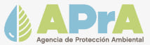
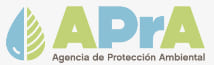

Somos una empresa con más de 30 años de experiencia en la recuperación de envases y materias primas industriales.
Nuestra compañia

A través de un equipo formado por más de 25 profesionales capacitados en el manejo de residuos industriales, brindamos un servicio ambiental integral fuertemente orientado hacia la gestión del Cero Residuo. Somos una empresa con más de 50 años de experiencia en la recuperación de envases y materias primas industriales. Contamos con líneas de procesamiento de última generación. No obstante, estamos en continua expansión con el objetivo de lograr un producto de mayor calidad, realizado con personal calificado, para satisfacer las crecientes exigencias del mercado nacional e internacional. Nuestra responsabilidad se refleja en las habilitaciones y certificaciones que obtenemos a nivel municipal, provincial y nacional; además de una cartera muy importante de clientes que comparten nuestra filosofía de trabajo y la necesidad del tratamiento sustentable de sus residuos.
Certificaciones

 
